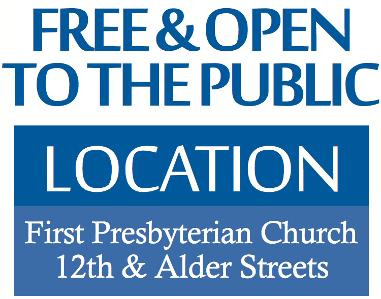

Director, In Defense of Animals,
Africa and Founder, Sonaga-Yang
Chimpanzee Rescue in Cameroon
Presentation: Kindred Beings

Presentation: Saving the Ocean's Creatures
Author, All American Vegan
Presentation: Have Your Cake and Eat It Too: How to Embrace and Sustain a Plant-Based Diet
Presentations: Animals in Theology & Grieving the Loss of Your Pet